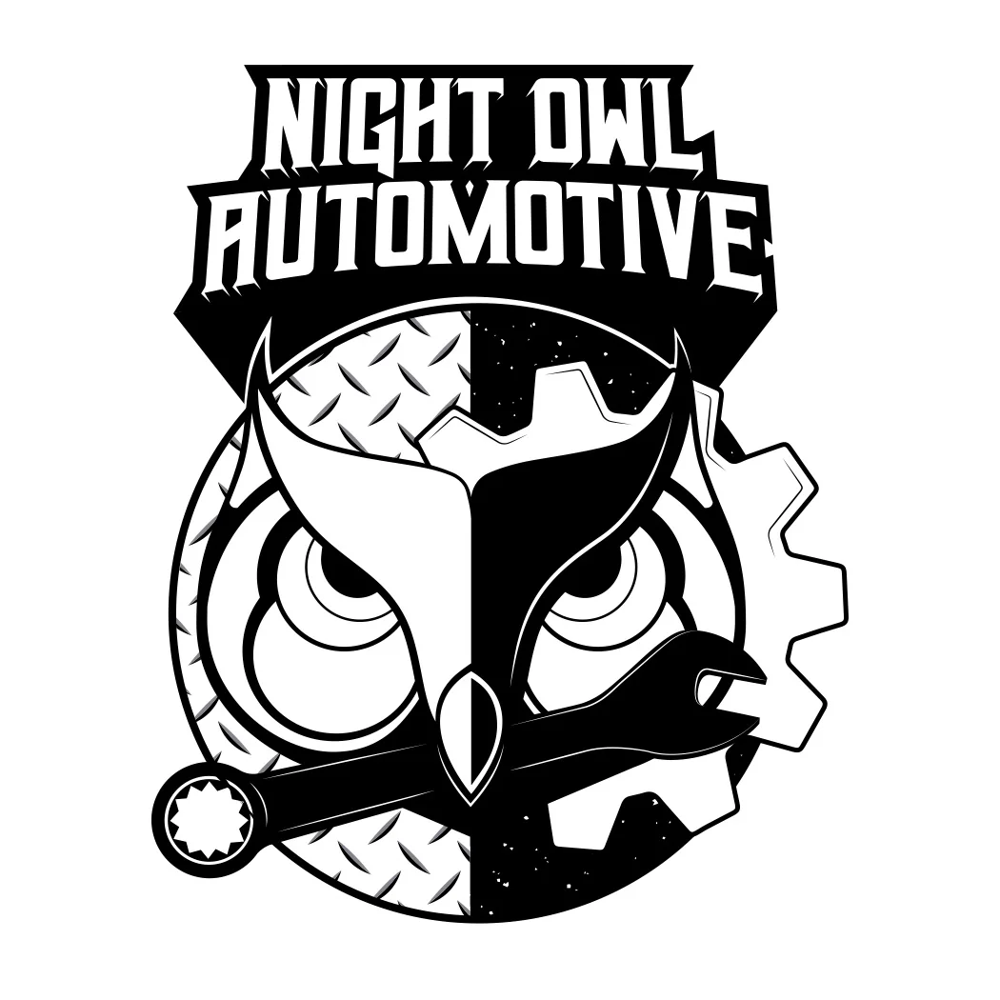
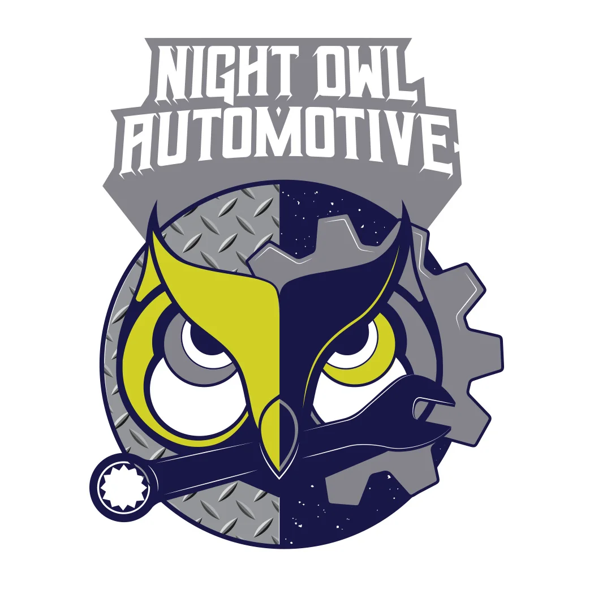

04 / Primary Illustrative Logo
The Full Night Owl Automotive Mark
The primary logo combines the owl and the automotive language into one illustration. The face is split between industrial surfaces, the gear reinforces the mechanical theme and the wrench cuts across the lower portion of the mark. The custom wordmark locks above the illustration to complete the identity.

